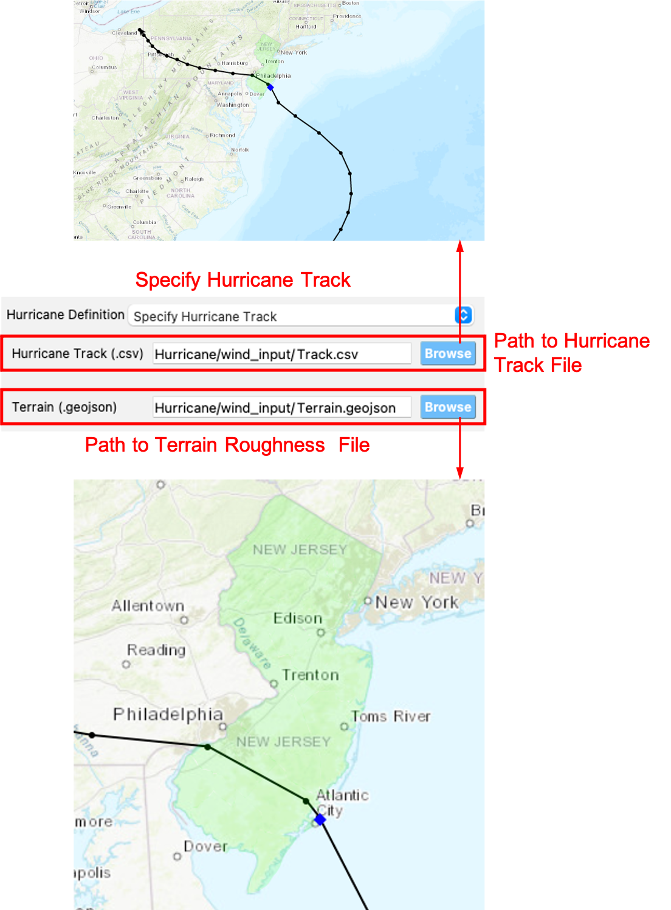
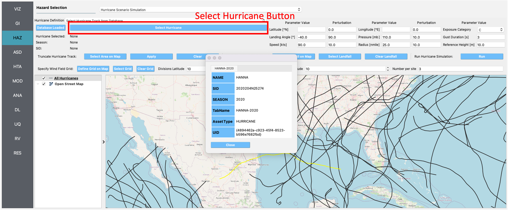

3. Tools¶
The main menu toolbar features the tools dropdown menu. In R2D, tools are applications designed to generate inputs for specific workflow applications. For instance, the Earthquake Event Simulation tool generates inputs for the User Defined Ground Motion and the Regional Site Response HAZ widgets.
3.1. Earthquake Event Simulation¶
This tool allows users to input earthquake scenario data, generating ground motions for specified points within an area. The Earthquake Scenario Simulation tool’s input panels are detailed below, with use cases described in the technical manual.
3.1.1. Site Definition Panel¶
The Site Definition Panel (Fig. 3.1.1.1) enables users to specify geographical locations and seismic characteristics for ground motion models.

Fig. 3.1.1.1 Earthquake Scenario Simulation Site Definition Input panel.¶
3.1.1.1. Site Definition Options¶
To input site locations, users can select to input a single location, multiple locations on a grid, or a collection of scattering sites, as seen in the Site Location Definition box at the top of Fig. 3.1.1.1. The available methods to input site definitions are:
Single Location
In the Single Location pane at the top of Fig. 3.1.1.1 is shown as Fig. 3.1.1.1.1. Users could define a single site where the seismic hazard is analyzed. The following inputs are needed:
Location: The latitude and longitude of the site.
Vs30 model: The model of the average shear-wave velocity (m/s) between 0 and 30 meters depth (Vs30). Note that the “User-specified” option is not available for this single site definition method.
Z1pt0 model: The model of depth (m) to where shear-wave velocity = 1.0 km/sec (the first occurrence if more than one depth exists).
Z2pt5 model: The model of depth (m) to where shear-wave velocity = 2.5 km/sec (the first occurrence if more than one depth exists).
The details of the available Vs30, Z1pt0, and Z2pt5 models in R2D are described here

Fig. 3.1.1.1.1 Single location site definition.¶
Grid of Locations
- In the Grid of Locations input pane, given in Fig. 3.1.1.1.2, the user can either manually define a grid, or select a grid on a map. To manually define a grid, the user needs to provide the following input parameters:
Latitude Extents: The minimum and maximum latitude values that the grid will span.
Longitude Extents: The minimum and maximum longitude values that the grid will span.
Latitude Discretization: The number of divisions along the latitude direction.
Longitude Discretization: The number of divisions along the longitude direction.
- In addition to defining the geographical extent of the grid, the user must also provide the following inputs:
Vs30 model: same with the Single Location site definition method.
Z1pt0 model: The model of depth (m) to where shear-wave velocity = 1.0 km/sec. If the “User-specified” option is selected, the user-specified value will be applied to all grid points.
Z2pt5 model: The model of depth (m) to where shear-wave velocity = 2.5 km/sec. If the “User-specified” option is selected, the user-specified value will be applied to all grid points.
The details of the available Vs30, Z1pt0, and Z2pt5 models in R2D are described here

Fig. 3.1.1.1.2 Grid of locations site definition pane.¶
To select a grid on a map, the user needs to click on the Define Grid on Map button, and a new Grid Selection Window will appear with the grid, as seen in Fig. 3.1.1.1.3. A user can click and drag the Resize and Move handles, shown in Fig. 3.1.1.1.3 as blue circles, to resize the grid extents and to move the grid. Changing the grid discretization along the latitude and longitude directions will change the number of grid divisions on the map. Once a grid is defined on the map, the window can be closed and the grid information will be updated in the input pane. To view or modify the grid again, press the Define Grid on Map button and the Grid Selection Window displaying the grid will reappear.

Fig. 3.1.1.1.3 Selection of grid on the map.¶
Scattering Locations
In the Scattering Locations input pane, given in Fig. 3.1.1.1.4, the user provides a custom list of sites. The following inputs are required:
Site File (.csv): The user-provided file, in
.csvformat, which contains the list of sites and corresponding site data. Users can provide user-specified Vs30, Z1pt0 and Z2pt5 values. The conventions to define such.csvfile is described hereSites to Analyze Filter: A filter to select a subset of the sites in the loaded Site File to analyze. All sites will be analyzed if this field is left empty.
Vs30 model: The model of the average shear-wave velocity (m/s) between 0 and 30 meters depth (Vs30). A “User-specified” option is available and the Vs30 models at each site should be provided in the Site File (.csv) as described in Site File (.csv) definition
Z1pt0 model: The model of depth (m) to where shear-wave velocity = 1.0 km/sec. If the “User-specified” option is selected, R2D will check if a “z1pt0” column exists in the Site File (.csv). If such a column exists, the values in the Site File (.csv) will be used. Otherwise, the value specified in the Z1pt0 pane will be applied to all sites.
Z2pt5 model: The model of depth (m) to where shear-wave velocity = 2.5 km/sec. If the “User-specified” option is selected, R2D will check if a “z2pt5” column exists in the Site File (.csv). If such a column exists, the values in the Site File (.csv) will be used. Otherwise, the value specified in the Z2pt5 pane will be applied to all sites.
The details of the available Vs30, Z1pt0, and Z2pt5 models in R2D are described here
Fig. 3.1.1.1.4 Scattering sites input pane.¶
3.1.1.2. Shear Wave Velocity¶
In seismic hazard analysis, the Shear Wave Velocity at a site is of interest because it gives an indication of whether the expected shaking in response to an Earthquake Rupture may be higher. For instance, at a bedrock site (high shear-wave velocity) there will be little amplification of seismic waves, whereas in a sedimentary basin (low shear-wave velocity) one might expect intense amplification. Vs30, Z1pt0, and Z2pt5 are several ways that shear-wave velocity data is incorporated into seismic hazard calculations.
- Vs30 Model
Vs30 stands for the average shear-wave velocity between 0 and 30 meters depth. More information is available at the USGS Global Vs30 Map Server site. Some ground motion prediction equations (e.g., Abrahamson, Silva, and Kamai (2014) [AbrahamsonSilvaKamai2014]) require knowing whether a Vs30 value was Measured or Inferred. Inferred Vs30 values are estimated based on correlations with local surface geology or slope and may introduce larger intra-event standard deviations. See detailed discussions in [AbrahamsonSilvaKamai2013]. R2D supports three models to infer Vs30 values and a user-specified method to specify measured Vs30 values. The unit of Vs30 in R2D is meter per second.
- CGS/Wills Vs30 (Wills et al., 2015) [willsetal2015]
This model is applicable to California, US, and is created based on correlations of Vs30 with geologic units and surface slope. The database is obtained by interfacing the WillsMap2015 class in openSHA, which obtained the database from the electronic supplements of [willsetal2015].
- Thompson California Vs30 (Thompson et al. 2018) [Thompson2018]
This model is applicable to California, US and the raw data can be obtained from the USGS website.
- Global Vs30 (Heath et al., 2020) [Heath2020]
This model is applicable to anywhere on the Earth. Heath et al. (2020) developed a hybrid global Vs30 map database that defaults to the global slope-based Vs30 map, but smoothly insets the more accurate regional Vs30 maps where available. The raw data can be obtained from the USGS website.
- User-specified
This method allows the user to input user-specified Vs30 values. This option is only available if Scattering Locations is used to define site locations. The user-specified values should be included in the user-provided
.csvfile with a column named (“vs30”). If the user-specified option is selected, users need also specify if the provided “vs30” values are measured or inferred by providing a “vsInferred” column in the.csvfile or checking/unchecking the “Specified Vs30 values are inferred” check box.
- Z1pt0 Model
The depth (km) to where shear-wave velocity = 1.0 km/sec (the first occurrence if more than one depth exists). Z1pt0 and Z2pt5 are related to long-period site response. Z2pt5 may be more directly related to the long-period site response, but Z1pt0 is used in many site classifications because it is closer to the traditional geotechnical parameter of “depth to bedrock” and is easier to measure for specific projects [AbrahamsonSilvaKamai2014]. The unit of Z1pt0 in R2D is meter.
- OpenSHA default model
This model applies to California. R2D will interpolate the SCEC Community Velocity Model Version 4, Iteration 26, Basin Depth, SCEC CCA, Iteration 6, Basin Depth, SCEC Community Velocity Model Version 4 Basin Depth, SCEC/Harvard Community Velocity Model Version 11.9.x Basin Depth, and USGS Bay Area Velocity Model Release 8.3.0 model to get the value of Z1pt0. The models are accessed by calling the class OrderedSiteDataProviderList in openSHA. If a NaN value is obtained from the interpolation, the prediction equation (Eq.1) in [ChiouYoungs2014] will be used to infer Z1pt0 value from Vs30.
- User-specified
If the Single Location or Grid of Locations site definition method is selected. The value specified in the Z1pt0 Model pane will be applied to all the site(s). If the Scattering Location site definition method is selected. R2D will check if a “z1pt0” column exists in the Site File (.csv). If such a column exists, the values in the Site File (.csv) will be used. Otherwise, the value specified in the Z1pt0 pane will be applied to all sites.
- Z2pt5 Model
The depth (km) to where shear-wave velocity = 2.5 km/sec (the first occurrence if more than one depth exists). Z1pt0 and Z2pt5 are related to long-period site response. Z2pt5 may be more directly related to the long-period site response. The unit of Z2pt5 in R2D is meter.
- OpenSHA default model
This model applies to California. R2D will interpolate the SCEC Community Velocity Model Version 4, Iteration 26, Basin Depth, SCEC CCA, Iteration 6, Basin Depth, SCEC Community Velocity Model Version 4 Basin Depth, SCEC/Harvard Community Velocity Model Version 11.9.x Basin Depth, and USGS Bay Area Velocity Model Release 8.3.0 model to get the value of Z2pt5. The models are accessed by calling the class OrderedSiteDataProviderList in openSHA. If a NaN value is obtained from the interpolation, the prediction equation (Eq.33) in [CampbellBozorgnia2014] will be used to infer Z2pt5 value from Vs30.
- User-specified
If the Single Location or Grid of Locations site definition method is selected. The value specified in the Z2pt5 Model pane will be applied to all the site(s). If the Scattering Location site definition method is selected. R2D will check if a “Z2pt5” column exists in the Site File (.csv). If such a column exists, the values in the Site File (.csv) will be used. Otherwise, the value specified in the Z2pt5 pane will be applied to all sites.
3.1.1.3. Site File (.csv) Definition and SimCenterSiteModel.csv¶
The Site File (.csv) is the user-provided file, in .csv format, that contains the list of sites and corresponding site data.
At a minimum, the Site File (.csv) must contain the station ID, latitude, and longitude of each site.
If the “User-specified” option is selected in the Vs30 Model, Depth to Z1pt0, or Depth to Z2pt5 panes,
corresponding information should also be included in the Site File (.csv). The naming convention for the columns in Site File (.csv)
is “ID” for station ID, “lat” for latitude, “lon” for longitude, “vs30” for Vs30, “z1pt0” for
depth (m) to where shear-wave velocity = 1.0 km/sec and “z2pt5” for depth (m) to where shear-wave velocity = 2.5 km/sec.
The station ID must be a consecutive sequence starting from 0.
Users can also provide a column of “vsInferred”. The value of “vsInferred” can be either 0 (stands for false) or 1 (stands for true).
If such a value is provided, the “vsInferred” defined in the Vs30 Model Pane will be overwritten.
Similarly, if users provide a column of “z1pt0” or “z2pt0”, the value specified in the
Depth to Z1pt0 and Depth to Z2pt5 panes are overwritten by the values in
the Site File (.csv).
When the Forecast Rupture Scenarios button is clicked, R2D will create a SimCenterSiteModel.csv based on the site location, vs30 model, depth to shear-wave velocity = 1.0 km/sec and 2.5 km/sec models. This is the output of the Site Definition Panel and will be used in the subsequent earthquake hazard simulation workflow. This file is stored in the “/HazardSimulation/GroundMotions/Input” folder in the R2D local work direction defined in R2D preferences.
Note
Users can check the correctness of the defined Site Model by reading the SimCenterSiteModel.csv file. If a user would like to overwrite a value in the SimCenterSiteModel.csv, they can edit the SimCenterSiteModel.csv and load it back to R2D as a Site File (.csv). Afterward, please select the “User-specified” option for the Vs30, Z1pt0, and Z2pt5 Model, and the values specified in the edited SimCenterSiteModel.csv will be used in the subsequent earthquake hazard simulation workflow.
- AbrahamsonSilvaKamai2013
Abrahamson, N. A., Silva, W. J., and Kamai, R., 2013. Update of the AS08 Ground Motion Prediction Equations Based on the NGA-West2 Data Set, PEER Report No. 2013/04, Pacific Earthquake Engineering Research Center, University of California, Berkeley.
- Heath2020
Heath, D.C., Wald, D.J., Worden, C.B., Thompson, E.M., and Smoczyk, G.M., 2020, A Global Hybrid Vs30 Map with a Topographic-Slope-Based Default and Regional Map Insets: U.S. Geological Survey data release, https://doi.org/10.5066/P96HFVXM.
- Thompson2018
Thompson, E.M., 2018, An Updated Vs30 Map for California with Geologic and Topographic Constraints (ver. 2.0, July 2022): U.S. Geological Survey data release, https://doi.org/10.5066/F7JQ108S.
- willsetal2015(1,2,3,4)
Wills, C. J., Gutierrez, C. I., Perez, F. G., & Branum, D. M. (2015). A next generation VS30 map for California based on geology and topography. Bulletin of the Seismological Society of America, 105(6), 3083-3091
3.1.2. Earthquake Rupture Panel¶
The Earthquake Rupture Panel is shown in Fig. 3.1.2.1. This is where a user defines the earthquake rupture(s) in the regional hazard analysis. The available Earthquake Rupture definition methods are OpenSHA ERF, Point Source, and OpenQuake ERF. The details of each method are described below.

Fig. 3.1.2.1 Earthquake Rupture Panel¶
3.1.2.1. OpenSHA ERF¶
This method allows users to define earthquake ruptures from two Earthquake Rupture Forecasting (ERF) models for California, which are implemented in OpenSHA. The two ERF models are “WGCEP (2007) UCERF2 - Single Branch” ([Field2009]) and “Mean UCERF3” ([Field2017])
- WGCEP (2007) UCERF2 - Single Branch ([Field2009])
This ERF model selects a single branch from UCERF2’s logic tree based on the Floater Type, Background Seismicity, Treat Background Seismicity As, and Probability Model options. The ERF model is obtained by interfacing the MeanUCERF2 class in OpenSHA.
- Mean UCERF3 ([Field2017])
Three of the most commonly used logic trees (named presets in OpenSHA) are available in R2D. The presets can be selected in the “Mean UCERF3 Presets” combo box. The available presets are “FM3.1 Branch Averaged”, “FM3.2 Branch Averaged”, and “(POISSON ONLY) Both FM Branch Averaged”. For each preset, there are more options to specify how to treat background seismicity, what probability model to use, and other parameters. More details of the ERF models can be found on the OpenSHA website
For both UCERF models, users also need to specify the Maximum Distance (km) between the centroid of the sites and the earthquake sources (faults) they want to consider. Users also need to specify the maximum magnitude and the minimum magnitude they want to consider in the earthquake hazard simulation. Only the ruptures that satisfy these three criteria will be selected.
After the ERF model parameters are set up, users should click the Forecast Rupture Scenarios button.
R2D will run the user-specified ERF models implemented in OpenSHA.
The generated earthquake ruptures will be saved as a .geojson
file named RupFile.geojson in the “HazardSimulation/GroundMotions/Output” folder in
the local work directory of R2D. The RupFile.geojson will be loaded to R2D and visualized
in the lower part of the Earthquake Rupture Panel.
Note
The number of ruptures generated by the UCERFs depends on the Fault Grid Spacing, if background seismicity is included, maximum and minimum considered rupture scenarios. Numerous scenarios (over tens of thousands) may be generated if the Mean UCERF3 model is used. Generating, saving, and visualizing such a large number of ruptures can be slow in R2D. If Scenario-Based ground motion simulation is desired after the earthquake rupture forecasting, users are recommended to look for their scenarios in OpenSHA’s Deterministic calculation type and identify their scenario. Afterward, a narrow selection criteria can be specified in R2D to reduce the run time.
Note
User other ERF models available in OpenSHA is also possible by directly running the backend application codes of R2D. Please contact the developer at the github discussion page for inquiries and feature requests.
3.1.2.2. Point Source¶
The Point Source pane, shown in Fig. 3.1.2.2.1, defines a single earthquake rupture. The point source may not accurately reflect real fault geometry but it may be useful for educational and/or academic use.
The required inputs are:
Magnitude: Magnitude of the earthquake.
Location and Depth: Latitude, Longitude, and depth of earthquake rupture.
Rupture Geometry: Average dip and rake of rupture.

Fig. 3.1.2.2.1 Point source earthquake rupture.¶
3.1.2.3. OpenQuake Earthquake Rupture Forecasting¶
The OpenQuake Earthquake Rupture Forecasting (OpenQuake ERF) option uses the Global Earthquake Model Foundation’s OpenQuake Engine to define ruptures from earthquake sources (faults) and estimate the occurrence rate of earthquake ruptures. In contrast to OpenSHA ERF, where the earthquake source models are built in UCERFs, users need to provide a Source File (
.xml) in OpenQuake’s conventions. Note that although R2D allows defining multiple “sourceGroup”, defining seismic source logic trees is not supported now.The OpenQuake ERF pane, shown in Fig. 3.1.2.3.1, requires the following inputs:
OpenQuake Version: Version of OpenQuake (currently available is 3.17).
Source Model File: A
.xmlfile (NRML format) defining an earthquake source geometry, magnitude scaling relationship, rupture aspect ratio, and magnitude frequency distribution. Examples of the rupture files can be found in the demos folder of OpenQuake’s GitHub repo.Rupture Meshsize: Mesh size for line sources.
Area Meshsize: Mesh size for area sources.
Maximum Distance: Maximum considered distance from source to site.
Maximum Magnitude: Maximum considered earthquake magnitude.
Minimum Magnitude: Minimum considered earthquake magnitude.
Magnitude-Frequency Distribution Bin Width Bin width to discretize the Magnitude-Frequency Distribution defined in the Source Model File.
Fig. 3.1.2.3.1 OpenQuake Scenario-Based Input.¶
- Field2009(1,2)
Field, E. H., Dawson, T. E., Felzer, K. R., Frankel, A. D., Gupta, V., Jordan, T. H., … & Wills, C. J. (2009). Uniform California earthquake rupture forecast, version 2 (UCERF 2). Bulletin of the Seismological Society of America, 99(4), 2053-2107.
- Field2017(1,2)
Field, E. H., Jordan, T. H., Page, M. T., Milner, K. R., Shaw, B. E., Dawson, T. E., … & Thatcher, W. R. (2017). A synoptic view of the third Uniform California Earthquake Rupture Forecast (UCERF3). Seismological Research Letters, 88(5), 1259-1267.
3.1.2.4. Forecast Rupture Scenarios Button¶
By clicking this button, R2D will clear the “HazardSimulation” folder in the local working directory of R2D. R2D will then create a SimCenterSiteModel.csv in the “Input” folder of the “HazardSimulation” folder. The SimCenterSiteModel.csv contains the location and site classification information defined in the Site Definition Panel.
R2D will then run the earthquake rupture forecasting models defined in the earthquake rupture panel. A file “RupFile.geojson” will be created in the “Output” folder of the “HazardSimulation” folder. The “RupFile.geojson” contains the basic information of the rupture scenarios generated by the earthquake rupture forecasting models. Users could inspect the SimCenterSiteModel.csv and RupFile.geojson files to check the results from earthquake rupture forecasting.
3.1.3. Scenario Selection Panel¶
The Scenario Selection Panel allows users to select which scenario(s) to consider in the generation of ground motion maps. Currently available options are:
3.1.3.1. Scenario-specific¶
This option selects a single earthquake scenario from the results of the Earthquake Rupture Forecasting to generate corresponding ground motion maps to be used in regional seismic analysis. Note that many ground motion maps can be generated from a single scenario because of the uncertainties associated with the ground motion prediction equations. Users need to identify the source ID and the rupture ID of the scenario they would like to analyze and input them into the Scenario-specific selection pane. To identify the source and rupture IDs, users can visualize in the scenario selection panel as shown in Fig. 3.1.3.1.1 or visualize the earthquake rupture scenarios created in ERF by right-clicking the Earthquake Ruptures – RupFile layer in the visualization pane in Earthquake Rupture pane and open the attribute table as shown in Fig. 3.1.3.1.2. Then users click on each row in the rupture table on the scenario selection panel, the rupture ID, and source ID will be filled automatically.
3.1.3.2. Conventional Monte Carlo¶
This option selects a series of earthquake scenarios from the results of the Earthquake Rupture Forecasting to generate a series of ground motion maps to be used in regional seismic risk analysis. Similar to the scenario-specific option, users can visualize the earthquake rupture scenarios created in ERF at the lower part of the Scenario Selection Panel or by right-clicking the Earthquake Ruptures – RupFile layer in the visualization pane in Earthquake Rupture pane and opening the attribute table as shown in Fig. 3.1.3.1.2. Users need to specify a range of the scenarios they would like to analyze by selecting them on the rupture table in the scenario-specific panel or inputting them into the conventional Monte Carlo selection line edit. To select on the rupture table, when one row is selected in the usual way, the current selection is cleared and the new item is selected. However, if the user presses the Ctrl key when clicking on one row, the clicked row gets toggled and all other rows are left untouched. If the user presses the Shift key while clicking on one row, all rows between the current row and the clicked row are selected or unselected, depending on the state of the clicked row. Multiple rows can be selected by dragging the mouse over them. The range users input in this panel is the index of the ruptures in the rupture table. Note if a user uses the attribute table in Fig. 3.1.3.1.2 to inspect the rupture index, R2D uses the initial index of the attribute table, which is sorted according to descending MeanAnnualRate. The selection will not synchronize if a user reorders or edits the attribute table (e.g., by sorting the attribute table based on source-site distance).
3.1.3.3. Hazard Consistent Downsampling¶
Because the number of earthquake scenarios is usually very big in conventional Monte Carlo method, there are algorithms to select a subset of all relevant earthquake scenarios with a scaled occurrence rate to achieve a similar hazard level with the full set of earthquake scenarios. R2D implemented one of such algorithms developed by Manzour & Davidson (2016) [Manzour2016]. To apply the algorithms, users need to define:
Hazard Curve Input The hazard curve(s) presenting the true hazard level that the downsampled earthquake scenarios aim to match. Users can select from inferred hazard curves from the full set of earthquake ruptures forecasted from the ERF model, National Seismic Hazard Map [Peterson2020] hazard curves, or User-defined hazard curves. An example of the format of user-defined hazard curves is shown in Listing 3.1.3.3.1.
Intensity measure The intensity measure used to calculate the hazard level. The intensity measure defined here has to be included in the specified Ground Motion Model.
Earthquake scenario sample size The earthquake scenario sample size limit in the downsampled earthquake scenario subset.
Ground motion map sample size The ground motion map sample size limit in the downsample earthquake suite.
Hazard curve Sa period: Period of the response acceleration Sa if the intensity measure type is Sa.
Return periods (yr): A list of return periods in years used in minimizing the difference between recovered and reference hazard curves (separated by “,”).
Users are encouraged to read the original paper [Manzour2016] to better understand how to select parameters used in the algorithm.
1[
2 {
3 "SiteID": 0,
4 "ReturnPeriod": [
5 50,
6 224,
7 475,
8 975,
9 2475
10 ],
11 "IM": [
12 0.11242100350620873,
13 0.45815976690544913,
14 0.5790443980602489,
15 0.7318242219076182,
16 0.9249147277217336
17 ]
18 },
19 {
20 "SiteID": 1,
21 "ReturnPeriod": [
22 50,
23 224,
24 475,
25 975,
26 2475
27 ],
28 "IM": [
29 0.11242100350620873,
30 0.45815976690544913,
31 0.5790443980602489,
32 0.7318242219076182,
33 0.9249147277217336
34 ]
35 }
36]
Note
The intensity measure selected in the Hazard Consistent Downsampling must be included in the Intensity Measure defined in the Ground Motion Models panel. This is because the Hazard Consistent Downsampling makes use of one of the computed intensity measures defined in the Ground Motion Models panel to compute the hazard level at each site.
- Manzour2016(1,2)
Manzour, H., Davidson, R. A., Horspool, N., & Nozick, L. K. (2016). Seismic hazard and loss analysis for spatially distributed infrastructure in Christchurch, New Zealand. Earthquake Spectra, 32(2), 697-712.
- Peterson2020
Petersen, M. D., Shumway, A. M., Powers, P. M., Mueller, C. S., Moschetti, M. P., Frankel, A. D., … & Zeng, Y. (2020). The 2018 update of the US National Seismic Hazard Model: Overview of model and implications. Earthquake Spectra, 36(1), 5-41.
3.1.4. Ground Motion Models¶
3.1.4.1. Intensity Measure and Period Points¶
The Intensity Measure and Period Points pane, shown in Fig. 3.1.4.1.1, requires the following inputs:
Intensity Measure Type: Type of intensity measure. The Spectral Acceleration (SA) and Peak Ground Acceleration (PGA) intensity measures are available.
Period Points: List of periods, in seconds, that are used in the ground motion selection procedure.
The units of the PGA and SA estimated in R2D are the gravitational constant (g) and the unit of PGV is centimeter per second (cm/s).

Fig. 3.1.4.1.1 Intensity measure and period.¶
3.1.4.2. Ground Motion Prediction Equations¶
Ground motion prediction equations estimate the intensity of ground shaking that may occur at a site. The Ground Motion Prediction Equation combo box, shown in Fig. 3.1.4.2.1, contains the following ground motion prediction equations:
Abrahamson, Silva & Kamai (2014) [AbrahamsonSilvaKamai2014]
Boore, Stewart, Seyhan & Atkinson (2014) [BooreEtal2014]
Campbell & Bozorgnia (2014) [CampbellBozorgnia2014]
Chiou & Youngs (2014) [ChiouYoungs2014]

Fig. 3.1.4.2.1 Ground motion prediction equations.¶
3.1.4.3. Spatial Correlation Models¶
This is where the user selects the spatial correlation models, and where the user defines the minimum and maximum scaling factors that are used in ground motion selection. Shown at the top of Fig. 3.1.4.3.1, the user has the option to select the Intra- and Inter-event Spatial Correlation Models. Spatial correlation ensures that ground motions at different locations will share similar characteristics. The following Inter-event Spatial Correlation Models are available:
Baker & Jayaram (2008) [Jayaram08]
Baker & Bradley (2017) [BakerBradley17]
and the following Intra-event Spatial Correlation Models are available:
Markhvida et al. (2017) [Markhvida17]
Jayaram & Baker (2009) [Jayaram09]
Loth & Baker (2013) [Loth13]
Du & Ning (2021) [DuNing2021]
Special thanks to Dr. Anne Hulsey for sharing the python package seaturtles, especially for the method of computing the regional ground motion intensity using the Markhvida et al. (2017) and Baker & Jayaram (2008) correlation models.

Fig. 3.1.4.3.1 Spatial correlation and ground motion selection scaling factors.¶
- AbrahamsonSilvaKamai2014(1,2,3)
Abrahamson, N. A., Silva, W. J., & Kamai, R. (2014). Summary of the ASK14 ground motion relation for active crustal regions. Earthquake Spectra, 30(3), 1025-1055.
- BooreEtal2014
Boore, D. M., Stewart, J. P., Seyhan, E., & Atkinson, G. M. (2014). NGA-West2 equations for predicting PGA, PGV, and 5% damped PSA for shallow crustal earthquakes. Earthquake Spectra, 30(3), 1057-1085.
- CampbellBozorgnia2014(1,2)
Campbell, K. W., & Bozorgnia, Y. (2014). NGA-West2 ground motion model for the average horizontal components of PGA, PGV, and 5% damped linear acceleration response spectra. Earthquake Spectra, 30(3), 1087-1115.
- ChiouYoungs2014(1,2)
Chiou, B. S. J., & Youngs, R. R. (2014). Update of the Chiou and Youngs NGA model for the average horizontal component of peak ground motion and response spectra. Earthquake Spectra, 30(3), 1117-1153.
- Jayaram08
Jayaram N, Baker JW. Statistical tests of the joint distribution of spectral acceleration values. Bulletin of the Seismological Society of America 2008; 98(5):2231–2243.
- Jayaram09
Jayaram, N., & Baker, J. W. (2009). Correlation model for spatially distributed ground‐motion intensities. Earthquake Engineering & Structural Dynamics, 38(15), 1687-1708.
- Loth13
Loth, C., & Baker, J. W. (2013). A spatial cross‐correlation model of spectral accelerations at multiple periods. Earthquake Engineering & Structural Dynamics, 42(3), 397-417.
- Markhvida17
Markhvida, M., Ceferino, L., & Baker, J. W. (2018). Modeling spatially correlated spectral accelerations at multiple periods using principal component analysis and geostatistics. Earthquake Engineering & Structural Dynamics, 47(5), 1107-1123.
- BakerBradley17
Baker, J. W., & Bradley, B. A. (2017). Intensity measure correlations observed in the NGA-West2 database, and dependence of correlations on rupture and site parameters. Earthquake Spectra, 33(1), 145-156.
- DuNing2021
Du, W., & Ning, C. L. (2021). Modeling spatial cross-correlation of multiple ground motion intensity measures (SAs, PGA, PGV, Ia, CAV, and significant durations) based on principal component and geostatistical analyses. Earthquake Spectra, 37(1), 486-504.
3.1.5. Ground Failure Models¶
The level 1 liquefaction and landslide models developed in PEER’s OpenSRA project are implemented in R2D. Please refer to Largent et al. (2023) [OpenSRAFrontiers] for the details of the models.
Ground failure models are selected in this tab. Fig. Fig. 3.1.5.2 is the user interface of the ground failure models panel. Users select the ground failure sources with the ground failure source checkboxes. When a checkbox is checked, a ground failure tab (e.g., Fig. Fig. 3.1.5.1.1 for liquefaction) will be displayed. The ground failure models require geospatial data input. For example, distance to water bodies and groundwater depth are required for several liquefaction trigging models. These geospatial data may be large and are not distributed with R2D by default. When any of the ground failure source checkboxes are checked, R2D will check if the geospatial data exits in the R2D package. If they do not exist, a window like Fig. Fig. 3.1.5.3 will pop up. If you would like to use the R2D default database, please click “Yes” and wait until the download completes to continue the analysis. If you do not plan to use the R2D the default database, you can click “Cancel” and provide the database with custom GIS files or define the geospatial values in the Site File loaded Site Definition Panel.
Note
Default data for landslide induced ground deformation: The default slope data (“CA_Slope_30m_WGS84_degree”) used in landslide is too big (1.9 Gb) and can not be downloaded automatically. To use the default data, please go to https://zenodo.org/records/13357384 on your browser and download the latest version of the “groundFailure.zip” file. After the download completes. Please unzip the “groundFailure.zip” file and place the unzipped folder in R2D’s default database folder.
For Apple Mac users, the default database folder can be find by right-clicking on R2D in your Finder and select “Show Package Contents” (See Fig. Fig. 3.1.5.1). The default database folder is in “Contents >> MacOS >> Databases”. If a “groundFailure” folder exists. Please move the “CA_Slope_30m_WGS84_degree” folder in the downloaded “groundFailure.zip” to existing “groundFailure”.
{kind=link}
Fig. 3.1.5.1 Databases location on Apple Mac.¶
For Windows users, the default database folder can be find in “R2D_Windows_Download >> Databases”. If a “groundFailure” folder exists. Please move the “CA_Slope_30m_WGS84_degree” folder in the downloaded “groundFailure.zip” to existing “groundFailure”.
Currently, the permanent ground deformation (PGD) induced by liquefaction and landslide can be estimated. The PGD induced by earthquake fault displacement will be added in future releases. The estimated horizontal ground deformation (PGD_h) and vertical ground deformation (PGD_v) are in the units of meter (m).
- OpenSRAFrontiers(1,2)
Largent, M., Bray, J., Watson-Lamprey, J., & Abrahamson, N. (2023). Developing software to assess the seismic risk of natural gas infrastructure: OpenSRA. Frontiers in Built Environment, 9, 1176919.
Fig. 3.1.5.2 Ground Failure Models Panel.¶
{kind=link}
3.1.5.1. Liquefaction-induced Ground Failure¶
Liquefaction Triggering Models
To estimate liquefaction-induced PGD_h and PGD_v, a triggering model, a lateral spreading model, and a settlement model need to be selected.
The triggering, lateral spreading, and settlement suitable for regional-scale liquefaction are summarized and
implemented in the OpenSRA project. The OpenSRA Project is a multi-year study to develop open-source seismic risk assessment tools for natural gas infrastructure.
The theories of the ground failure models are described in detail in the OpenSRA report.
The liquefaction triggering model estimates the liquefaction susceptibility (liq_susc) and liquefaction probability (liq_prob) at the sites defined in the Site Definition Panel. The following liquefaction-triggering models are available:
Zhu et al. (2017) [Zhu2017]
Hazus (2020) [Hazus2020]
Zhu et al. (2017) [Zhu2017] susceptibility and Hazus (2020) [Hazus2020] probability
The [Zhu2017] triggering model uses geospatial proxies (e.g., distance to water body, groundwater depth) to estimate liquefaction susceptibility and liquefaction probability. The [Hazus2020] uses geologic unit information to define liquefaction susceptibility. The liquefaction probability is then calculated based on the liquefaction susceptibility and ground shaking intensities as suggested in section 4.2.2.1.2 of [Hazus2020]. The Zhu et al. (2017) [Zhu2017] susceptibility and Hazus (2020) [Hazus2020] probability method uses the liquefaction susceptibility derived from geospatial proxies as suggested in [Zhu2017] and then use the equations in [Hazus2020] to evaluate liquefaction probability.
To use the liquefaction triggering models, GIS raster or vector files are required as inputs. R2D provides several default files that can be used as baselines to estimate liquefaction triggering in California. The GIS files are produced and published by the OpenSRA project. They are on state-wide scales and may introduce uncertainties due to limited resolutions. Users can provide other raster files, or define the proxy values in the Site File (.csv) if preferred.
The output of the triggering model is the liquefaction susceptibility (liq_susc) and liquefaction probability (liq_prob). The liq_susc is defined in section 4.2.2.1.1 of [Hazus2020] and is encoded with integer numbers, with 0 standing for “None” and 5 standing for “Very High”. liq_susc and liq_prob will only be saved in the final output if the checkboxes at the bottom of the triggering model selection are checked.
Note
Possible Errors: Besides the geospatial proxies and geologic information, the triggering models also require peak ground acceleration (PGA), peak ground velocity (PGV), and earthquake magnitude. As a result, PGA and PGV need to be selected in the Ground Motion Models panel. Otherwise, the backend Python script will return an error and a message of “At least one of ‘PGA’ and ‘PGV’ is missing in the selected intensity measures.” will be printed.
Lateral Spreading and Settlement Models
The liquefaction lateral spreading and settlement model available in R2D is:
Hazus (2020) [Hazus2020]
The details of the models are described in 4.2.2.1.3.1 of [Hazus2020] and OpenSRA report.
The units of the lateral spreading ground deformation (liq_PGD_h) and settlement ground deformation (liq_PGD_v) estimated with R2D is meter (m). liq_PGD_h and liq_PGD_v will be saved in the final output if the checkboxes below the lateral spreading and settlement selection combo box are checked.
The output will also contain fields of “PGD_h” and “PGD_v”. If only liquefaction models are evaluated, they are equal to “liq_PGD_h” and “liq_PGD_v”. If both liquefaction and landslide models are evaluated, the “PGD_h” value will be the sum of ground deformation induced by liquefaction and landslide.
- Zhu2017(1,2,3,4,5)
Zhu, J., Baise, L. G., & Thompson, E. M. (2017). An updated geospatial liquefaction model for global application. Bulletin of the Seismological Society of America, 107(3), 1365-1385.
- Hazus2020(1,2,3,4,5,6,7,8,9)
FEMA (2020). Hazus Earthquake Model Technical Manual.
Fig. 3.1.5.1.1 Ground Failure Models Panel.¶
3.1.5.2. Landslide-induced Ground Failure¶
Landslide Ground Displacement Model
The model developed by Bray and Macedo (2019) [BrayMacedo2019] is implemented in R2D. This model estimates landslide-induced ground displacement using five model-specific input variables, along with the output (Earthquake Magnitude and Peak Ground Acceleration) defined/estimated in the “Earthquake Rupture” tab and “Ground Motion Models” tab.
The five model-specific variables for the Bray and Macedo (2019) model need to be defined at each site. The five input variables and their corresponding input methods in R2D are:
- Slope (degree):
Define with raster (nearest pixel): Use the slope value defined at the nearest pixel to each site in a raster file (e.g., a .tif file).
Defined (“slope”) in Site File (.csv): A column named “slope” is defined in the “Site File” input in the “Sites” tab.
- Slope Thickness
Use constant value (m): Assume a constant slope thickness at all sites. Seismically induced disrupted soil slides are typically shallow, usually 1 – 3 m thick ([GrantEtal2016]). A value of 2 m is used as the default in R2D.
Define with raster (nearest pixel): Use the slope thickness value defined at the nearest pixel to each site in a raster file (e.g., a .tif file).
Defined (“slopeThickness”) in Site File (.csv): A column named “slopeThickness” is defined in the “Site File” input in the “Sites” tab.
- Slope Unit Weigth (kN/m^3)
Use constant value (kN/m^3): Assume a constant soil unit weight at all sites. A unit weight of 17 kN/m³ is used as the default value in openSRA [OpenSRAFrontiers]. The same default value is used in R2D.
Define with raster (nearest pixel): Use the soil unit weight defined at the nearest pixel to each site in a raster file (e.g., a .tif file).
Defined (“gammaSoil”) in Site File (.csv): A column named “gammaSoil” is defined in the “Site File” input in the “Sites” tab.
- Soil Cohesion (kPa)
Infer from Geologic Map (Bain et al. 2022): Infer soil cohesion from a geologic map according to Table B.15 in Bain et al. 2022 [BainEtal2022]. If this option is selected, a field to input the Geologic Map File will appear at the bottom of this tab. The default California state-wide geologic map in R2D is the map developed by Wills et al. (2015) [WillsEtAl2015].
Use constant value (kPa): Assume a constant soil cohesion value at all sites.
Defined (“cohesionSoil”) in Site File (.csv): A column named “cohesionSoil” is defined in the “Site File” input in the “Sites” tab.
- Soil Friction Angle (degree)
Infer from Geologic Map (Bain et al. 2022): Infer the soil friction angle from a geologic map according to Table B.15 in Bain et al. 2022 [BainEtal2022]. If this option is selected, a field to input the Geologic Map File will appear at the bottom of this tab. The default California state-wide geologic map in R2D is the map developed by Wills et al. (2015) [WillsEtAl2015].
Use constant value (degree): Assume a constant soil friction angle value at all sites.
Defined (“phiSoil”) in Site File (.csv): A column named “phiSoil” is defined in the “Site File” input in the “Sites” tab.
The units of the landslide ground deformation (lsd_PGD_h) estimated with R2D is meter (m). liq_PGD_h will be saved in the final output if the checkbox in the Save Ouput combo box are checked.
The output will also contain a field of “PGD_h”. If only landslide model is evaluated, it is equal to “lsd_PGD_h”. If both liquefaction and landslide models are evaluated, the “PGD_h” value will be the sum of ground deformation induced by liquefaction and landslide.
- BrayMacedo2019
Bray, J. D., & Macedo, J. (2019). Procedure for estimating shear-induced seismic slope displacement for shallow crustal earthquakes. Journal of Geotechnical and Geoenvironmental engineering, 145(12), 04019106.
- GrantEtal2016
Grant, A., Wartman, J., & Abou-Jaoude, G. (2016). Multimodal method for coseismic landslide hazard assessment. Engineering Geology, 212, 146-160.
- BainEtal2022(1,2)
Bain, Chris; Hutabarat, Daniel; Bray, Jonathan D.; Abrahamson, Norman; O’Rourke, Thomas D.; Lindvall, Scott. 2022. Performance-Based Earthquake Engineering Assessment Tool for Natural Gas Storage and Pipeline Systems, Task B - Enhanced Liquefaction and Ground Deformation Report. California Energy Commission. July 2022.
3.1.6. Ground Motion Record Selection¶
3.1.6.1. Ground Motion Record Database¶
Ground motion records are selected from a ground motion database. Currently, only the PEER NGA-West2 database is available, shown in the Ground Motion Record Database combo box in Fig. 3.1.6.1.1. Alternatively, a user can select None to skip ground motion selection altogether. In that case, only the intensity measures will be saved at each location.

Fig. 3.1.6.1.1 Ground motion records database.¶
The Ground Motion Record Scaling Bounds, shown in Fig. 3.1.6.1.1, are the minimum and maximum scaling factors that intensity measures can be scaled by during the ground motion selection process.
3.1.6.2. Run Hazard Simulation Button¶
Shown at the bottom of Fig. 3.1.6.1.1, the Run Hazard Simulation button starts the ground motion selection application. The earthquake scenario simulation is run via a Python script. When the Run Hazard Simulation button is pressed, text output from the script will appear in the Program Output console at the bottom of the application. Upon successful completion of the earthquake scenario simulation, results from the simulation are in the HazardSimulation/GroundMotions/Output folder of the local working directory that is specified in R2D preferences, as shown in Fig. 1.2.6.7.
The intensity measure outputs are stored in
the IMs folder in HazardSimulation/GroundMotions/Ouput. The output is a .csv file
called EventGrid.csv containing the site locations and the names of the .csv files containing
the intensity measure samples at each site. The number of intensity measure samples
at each site is equal to the number of ground motions per site specified in the
ground motion record selection panel, as shown in Fig. 3.1.6.1.1.
The output of PGA and SA are in the unit of gravitational acceleration (g).
If ground motion record selection is performed, the selected records will be saved in
the HazardSimulation/GroundMotions/Ouput folder. The output includes an EventGrid.csv
file, which contains site locations and the names of the .csv files containing the selected
ground motion records at each site. Each site is assigned a .csv file containing
a list of the selected ground motions at the site and their scaling factors.
If ground motion records are saved in JSON format in the HazardSimulation/GroundMotions/Ouput directory.
The EventGrid.csv will also be post-processed, and a new layer containing the
ground motions will be added to the GIS widget. The grid points are represented
with a cross symbol. Clicking on a grid point will produce a popup with information
about the ground motions at that point.
3.1.6.3. Video Resources¶
3.2. OpenQuake Selection Widget¶
The OpenQuake Selection Widget allows for the selection of OpenQuake seismic sources in a GIS window and exporting only the selected sources into a new .xml file for use in OpenQuake. The OpenQuake Selection Widget input pane is given in Fig. 3.2.1.
To load an OpenQuake file (only .xml files supported), click on the Browse button next to the input file box, and then select the input file in the dialog that will appear.
Next, select a subset of sources in the GIS window that you wish to keep. To be able to select the OpenQuake sources in the map, you first need to select a layer in the layer tree, shown on the left-hand side of Fig. 3.2.1. There are three layers that correspond to the different source geometries in OpenQuake; namely point, line, and area sources.
There are several methods available to select the sources on the GIS map. Clicking on one of the Selection Method buttons, shown in Fig. 3.2.1, will change the selection tool to that corresponding method.
Note
Only features that are in the current layer can be selected on the map. The current layer is the layer that is selected (highlighted) in the layer tree.
Some tips for selecting features are:
To select multiple features, hold down the shift key.
The selected features are highlighted in yellow.
A layer needs to be visible to enable asset selection on that layer.
To clear everything and start over again, click on the Clear button.
To clear the selected features on the current layer, click anywhere on the map where there are no features. Alternatively, you can clear all the selected features from all layers by clicking on the Clear Selection button.
Once you are done with the selection process, you can export the selected sources (highlighted in yellow) by first providing a file path and name. Clicking on the Browse button next to the export file box will open a dialog where you can input a directory path and file name, i.e., the name and location where the .xml file containing the selected sources will be saved. Once you have entered a file name and path, clicking on the Export button will generate the new .xml file that can be used in OpenQuake. The name and path of the exported file will appear in the program output pane.

Fig. 3.2.1 OpenQuake selection pane.¶
3.3. Hurricane Scenario¶
This tool dialog is where the user can enter data for a specific hurricane, and it will generate a wind field for a specific region.
The Hurricane Scenario Simulation, seen in Fig. 3.3.1, is a tool that calculates a wind field over a user-defined grid. The application is implemented based on the method proposed by [SnaikiWu2017a] and [SnaikiWu2017b]. The GIS visualization window, seen at the bottom of Fig. 3.3.1, is used to interactively define hurricane inputs. At a minimum, a user needs to specify a set of hurricane track points, landfall location and parameters, and a wind field grid. The individual input panes are discussed below.
Fig. 3.3.1 Hurricane Scenario Simulation Application.¶
Hurricane Definition
A user has the option to either specify a hurricane track and associated landfall parameters or select a historical hurricane from a built-in database.
Specify Hurricane Track
To manually input a hurricane track, the user needs to supply a
.csvfile with rows that contain the latitude and longitude coordinates of the points along the track. To input the hurricane track file, the user needs to specify the file path in the Path to Hurricane Track File input shown in Fig. 3.3.2. A successfully loaded track is shown at the top of Fig. 3.3.2. The circles represent a measurement point along the track and the arrowhead shows the direction of the hurricane. Clicking on a circle will produce a dialog with the available information at that point.Fig. 3.3.2 Manually defined hurricane track.¶
An example hurricane track input file is given below in Fig. 3.3.3. The track data should be in temporal order, i.e., the first measurement should be in the first row of the input file.

Fig. 3.3.3 Example data for hurricane track input.¶
Users also have the option to specify a terrain roughness file in the
.geojsonformat. Users need to provide the path to the terrain roughness file in the Path to Terrain Roughness File input, given in Fig. 3.3.2. When loaded, the terrain roughness file will be visualized in the GIS window, as highlighted at the bottom of Fig. 3.3.2. If a terrain roughness is not specified, a default value of 0.03 m is used (assuming open/flat terrain with few isolated obstacles).Select Hurricane from Database
The panel to select a historical hurricane is shown in Fig. 3.3.4. Clicking on the Load Hurricane Database button will load the database and all the hurricanes in the database will appear in the GIS window, as shown at the bottom of Fig. 3.3.4. The database that is pre-bundled with the application is the International Best Track Archive for Climate Stewardship (IBTrACS) v04r00 database, listing storms that have occurred in the last three years. Users can modify the
.csvdatabase file, e.g., update it or add their own storm information, if the same header format and file name (ibtracs.last3years.list.v04r00.csv) is retained. Users can find this file in theDatabasesfolder that is in the R2D installation directory.
Fig. 3.3.4 Hurricane selection from a database.¶
To load a specific hurricane, a user needs to navigate to a hurricane of their choice in the GIS window and click on the hurricane to select it. The selected hurricane will be highlighted, as shown in Fig. 3.3.5, and a dialog will appear providing the hurricane track metadata. Clicking on the Select Hurricane Button in Fig. 3.3.5 will finalize the selection. The selected hurricane’s metadata will appear in the box that is given in the middle of Fig. 3.3.4.
Fig. 3.3.5 Selecting a hurricane from the map.¶
After selecting a hurricane, a user will see the final hurricane track, similar to what is shown in Fig. 3.3.6. The circles represent a measurement point along the track. Clicking on a circle will produce a dialog with the available information at that point. The blue diamond represents the first point of hurricane landfall, i.e., the first point at which the distance to land is equal to zero. If a landfall location is found, the landfall parameters are programmatically filled in with the measurements at the landfall location. In the case where a hurricane makes landfall more than once, the user has the option to clear the initial landfall point and select another landfall point, the procedure of which is described below. Note that if a new landfall location is selected by the user, except for the latitude and longitude which is updated programmatically, users should manually update the landfall parameters to agree with the expected parameter values at the new location.

Fig. 3.3.6 Output after hurricane selection.¶
Hurricane Landfall Parameters
This is where the user inputs the hurricane landfall parameters. Hurricane landfall occurs when the center of the storm moves across a coastline after traversing open water. Shown in Fig. 3.3.7, the user must supply the following parameter values:
Latitude in degrees North
Longitude in degrees East
Landing, or approach angle, in degrees
Speed in knots (kts)
Pressure in millibars (mb)
Radius in nautical miles (nmile)
Exposure category to classify terrain roughness
Gust duration in seconds (s)
Reference height in meters (m).
Note that if a track is selected from the database, the landfall parameters will be automatically filled in based on the first encountered landfall. The Perturbation input boxes allow the user to specify uncertainty in the parameter values.

Fig. 3.3.7 Hurricane Landfall Parameters.¶
Specify Landfall Location
The hurricane landfall location is manually defined using the buttons in Fig. 3.3.8. Clicking on the Define Landfall on Map button causes a blue circle to appear in the GIS window, as seen in the righthand side of the window in Fig. 3.3.7. A user can click on and drag this circle to any location on the map. When the user is satisfied with their new landfall location, they need to click on the Select Landfall button to finalize the selection. The landfall will then appear as a blue diamond symbol in its own layer in the GIS window. If a user wants to erase an existing landfall location, they need to click on the Clear Landfall button and start over.
Fig. 3.3.8 Specify Hurricane Landfall.¶
Truncate Hurricane Track
R2D allows users to truncate hurricane tracks to save time in the wind field computations. This is also useful when a user requires only a portion of a hurricane track in their region of interest. The buttons for truncating a hurricane track are shown in Fig. 3.3.9. Clicking on the Select Area on Map button in the figure will turn on the selection procedure. Clicking on any point in the GIS window will start the selection process. Continuing the point selection procedure by clicking elsewhere on the map will form the boundary of the selection polygon, an example of which is provided in Fig. 3.3.9. Right-clicking anywhere on the map, or pressing the escape key, will clear the polygon and select the points within the polygon. The selected points will be highlighted in yellow. The selection points can be cleared at any time by pressing the Clear button. Clicking on the Apply button will finalize the selection. The yellow-highlighted track points that are selected will be kept, and all other points will be discarded. Note that once the Apply button is pressed, the procedure cannot be undone. An example truncated track is given in the left-hand side of the GIS window in Fig. 3.3.9.
Fig. 3.3.9 Truncate Hurricane Track.¶
Specify Wind Field Grid
To select the wind field grid on a map, the user needs to click on the Define Grid on Map button. A new grid will appear in the GIS window, as seen in Fig. 3.3.10. A user can click and drag the Resize and Move handles, shown in Fig. 3.3.10, to resize the grid extents and to move the grid. Changing the grid discretization along the latitude and longitude directions will change the number of grid divisions on the map. Once a grid is defined on the map, the user needs to click on the Select Grid button to finalize grid selection. When grid selection is finalized, a new layer is added to the GIS widget. Shown on the right-hand side of Fig. 3.3.10, the wind field grid points are represented with a cross symbol. Clicking on the Clear Grid button will clear the existing grid, allowing for the selection of a new grid.

Fig. 3.3.10 Hurricane Wind Field Grid.¶
Run Simulation Button
Shown on the right-hand side of Fig. 3.3.1, the Run Simulation button starts the hurricane simulation application. The results from the simulation are in the Output Directory folder specified in R2D preferences. The final output is a .csv file called EventGrid.csv. The EventGrid.csv file contains the grid point locations and file names. Each grid point is assigned a .csv file containing a list of the peak wind speeds at the grid point. The EventGrid.csv is post-processed and the grid points created in the Specify Wind Field Grid step will be updated with the Peak Wind Speed values that are calculated in the simulation. Clicking on a grid point will produce a popup listing the wind speeds at that point.
- SnaikiWu2017a
Snaiki, R. and Wu, T. (2017a). Modeling tropical cyclone boundary layer: Height-resolving pressure and wind fields. Journal of Wind Engineering and Industrial Aerodynamics, 170, pp. 18-27.
- SnaikiWu2017b
Snaiki, R. and Wu, T. (2017b). A linear height-resolving wind field model for tropical cyclone boundary layer. Journal of Wind Engineering and Industrial Aerodynamics, 171, pp. 248-260.
3.4. User-specified Hurricane¶
The User-specified Hurricane application loads the results of a Hurricane Scenario Simulation that was shown previously. The User-specified Hurricanes application input pane is given in fig-R2DUserSelectWindField. As seen in the figure, the user is required to input the file path to the EventGrid.csv file. If the wind and/or inundation field stations are not in the same folder as the EventGrid.csv file, then the user needs to input the directory path to the folder containing the wind and/or inundation field station files. The user also needs to specify the units of the intensity measure field.

3.5. Census Data Allocation¶
The Census Data Allocation application can be employed to augment an existing asset inventory with US Census demographic information and socio-economic information, e.g., household income, from the American Community Survey (ACS). The input panel is shown in Fig. 3.5.1. As seen in the figure, the asset information is supplied via the selection of an already imported layer in R2D. Alternatively, a user can supply an asset layer in a GIS format, e.g., shapefile, geodatabase, and the supplied layer will be employed.
Note
R2D will make a copy of the asset layer that you provide. Going forward, the copy of the asset layer is employed to preserve the original data.
- The procedure is as follows:
Given an asset inventory, R2D cross-references the assets with a US counties map (2021), generating a set of US county codes that overlap with the provided asset inventory.
The US Census API is queried and the population demographic information within each county is downloaded at the block level and saved locally. Similarly, the ACS API is called to download socio-economic information and the data is saved as a second GIS file. The ACS data is saved at the block group level. The GIS files are found in the output folder specified by the user (shown below as Directory to store created .GIS files).
The Census and ACS information from the downloaded GIS files is extracted and appended to the assets in the copied layer by performing a spatial join. This means that each asset within the copied layer will be augmented to contain the information extracted from the Census block level layer and the ACS block group layer in which it is located.
Note
The download of census data employs a modified version of the censusutil.py script from the pyincore-data module, a component of IN-CORE.
The Asset Layer Selection Dropdown is where the user selects the GIS layer in R2D that contains the asset inventory of interest. When the user selects a layer, it will be copied automatically.
If the user provides their own GIS file with the asset inventory, they will also have to provide the Coordinate Reference System (CRS). The CRS dropdown is where the coordinate reference system for a particular GIS file is specified so that it can be projected into the correct coordinates.
The Census Date dropdown is where the Census vintage is provided. Currently, the 2010 and 2020 Census dates are supported.
The Census Variables input box is where the user can provide custom variables to download from the Census API in a comma separated list. For the 2010 vintage the default variables are
P005001,P005003,P005004,P005010, and for the 2020 vintage, the default variables areP2_001N,P2_002N,P2_005N,P2_006N. You can go to the Census website for a particular vintage to see what the variables mean, and what other variables are available.- The default variables for 2010 are:
P005001 = Total
P005003 = Total!!Not Hispanic or Latino!!White alone
P005004 = Total!!Not Hispanic or Latino!!Black or African American alone
P005010 = Total!!Hispanic or Latino
- The default variables for 2020 are:
P2_001N=!!Total:
P2_002N=!!Total:!!Hispanic or Latino
P2_005N=!!Total:!!Not Hispanic or Latino:!!Population of one race:!!White alone
P2_006N=!!Total:!!Not Hispanic or Latino:!!Population of one race:!!Black or African American alone
The ACS Date dropdown is where the ACS vintage is provided. Currently, the 2010, 2015, and 2020 ACS dates are supported.
The ACS Variables input box is where the user can provide custom variables to download from the ACS API. They should also be provided in a comma-separated list.
- For the 2010, 2015, and 2020 5-year ACS vintage the default variables are:
B19001_001E - Estimate!!Total
B19001_002E - Estimate!!Total!!Less than $10,000
B19001_003E - Estimate!!Total!!$10,000 to $14,999
B19001_004E - Estimate!!Total!!$15,000 to $19,999
B19001_005E - Estimate!!Total!!$20,000 to $24,999
B19001_006E - Estimate!!Total!!$25,000 to $29,999
B19001_007E - Estimate!!Total!!$30,000 to $34,999
B19001_008E - Estimate!!Total!!$35,000 to $39,999
B19001_009E - Estimate!!Total!!$40,000 to $44,999
B19001_010E - Estimate!!Total!!$45,000 to $49,999
B19001_011E - Estimate!!Total!!$50,000 to $59,999
B19001_012E - Estimate!!Total!!$60,000 to $74,999
B19001_013E - Estimate!!Total!!$75,000 to $99,999
B19001_014E - Estimate!!Total!!$100,000 to $124,999
B19001_015E - Estimate!!Total!!$125,000 to $149,999
B19001_016E - Estimate!!Total!!$150,000 to $199,999
B19001_017E - Estimate!!Total!!$200,000 or more
B19013_001E - Estimate!!Median household income in the past 12 months (in 2016 inflation-adjusted dollars)
The Output Folder is the location on your computer where R2D will save the GIS files that are downloaded from the US Census APIs.
The Download Census Data Button runs the process that extracts the counties that overlap the building inventory, calls the US Census and ACS APIs to download data for the extracted counties, and saves the data as GIS files to the output folder.
The Census Block-level GIS File and American Community Survey Block Group Level GIS File boxes provide the file paths to the respective GIS files. These paths will be populated automatically after the download process described above completes. Alternatively, you can provide your own Census and ACS layers to join the building inventory. Clicking on the Browse button will open a dialog where you can select the respective file.
The Extract Census Data Button runs the process that extracts the Census and ACS data from the GIS files and appends that information to each asset in the copied asset layer. Users can now save the newly augmented layer by right-clicking on the layer in the layer tree and selecting the
Export->Save Asoption.

Fig. 3.5.1 Census data allocation input panel.¶
3.6. BRAILS - Buildings¶
This tool dialog will create a building asset inventory from images of buildings in a region. For further details, please refer to the documentation of Building and Infrastructure Recognition using AI at Large-Scale (BRAILS)
3.7. BRAILS - Transportation¶
This tool dialog creates a transportation asset inventory from the US Department of Transportation’s National Bridge Inventory (NBI), the National Tunnel Inventory (NTI), and the US Census Bureau’s TIGERweb roadway inventory.
The output of the inventory is four GeoJSON files. Each contains the asset information of the bridges, tunnels, roads, and railroads in the user-specified region. BRAILS also outputs a JSON file in the format described in Section 2.6.1.3, which contains all information in the GeoJSON files.